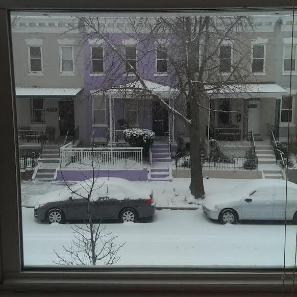

<!-- Teasers -->
<div class="bss-slides">
  <figure>
    
      <figcaption>Washington, DC</figcaption>
  </figure>
  <figure>
    
      <figcaption>Istanbul, Turkey</figcaption>
  </figure>
  <figure>
    
      <figcaption>Juneau, AK</figcaption>
  </figure>

       <!-- more figures here as needed -->

</div>
<script src="better-simple-slideshow.js"></script>
<script>
var opts = {
            //auto-advancing slides? accepts boolean (true/false) or object
            auto : false,
            // show fullscreen toggle? accepts boolean
            fullScreen : true,
            // support swiping on touch devices? accepts boolean, requires hammer.js
            swipe : false
        };
makeBSS('.bss-slides', opts);
</script>
